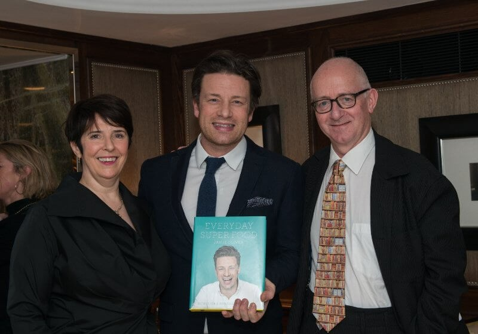

Last Thursday night we had a great evening at the Goring Hotel celebrating the André Simon Food & Drink Book Awards, which showcase the best of contemporary food and drink writing.
Jamie Oliver was among the winners, scooping the prestigious John Avery Award in recognition of both Jamie's influential new book Everyday Super Food – described by Jamie as "his most personal book" – and his contribution to the food industry spanning nearly two decades.
Jamie gave a funny and off-the-cuff acceptance speech, but also made the serious point to the press that the Prime Minister could do more to challenge childhood obesity. He said the issue is not "rocket science" and told the press, "I honestly think that this childhood obesity strategy will set the tone of where we go in the next 100 years in public health. Regardless of who you vote for, it's Cameron's legacy. There's no real reason why he can't do the right thing." (MailOnline)
During the awards, Jamie caught up with this year's food book assessor Pat Llewellyn, who launched Jamie's first series The Naked Chef with the BBC back in 1999, and shortlisted author Anna Jones, a graduate of Jamie's Fifteen restaurant programme.
Blogger and author Rachel Roddy won this year's Food prize for her debut publication, Five Quarters: Recipes and Notes from a Kitchen in Rome. The book – which judges commended for its vibrant evocation of the tastes and smells of Rome, refreshing simplicity and unstyled production – charts a year in Rachel's tiny kitchen in a suburb of the Italian capital.
We love Five Quarters, which depicts Rachel's adventures in shopping, cooking, eating, writing and falling in love, capturing a uniquely domestic picture of her life there, with hints of nostalgia, memories of growing up in England. If you'd like to try some of Rachel's recipes at home yourself, you might like to check out this recent feature in the Guardian.
Meanwhile, investigative journalist Suzanne Mustacich won this year's prize in the Drink for Thirsty Dragon, which explores China's lust for Bordeaux and its threat to the world's best wines. It's an exhaustively researched tale of business skulduggery and fierce cultural classes with a dramatic narrative, eloquent style and fascinating cultural analysis – a real life thriller. You can catch Suzanne speaking about Thirsty Dragon on BBC Radio 4's The World Tonight this Friday.
First Bite by food scholar Bee Wilson was also recognised with a Special Commendation in acknowledgement of its study of how we form our food preferences and how we may be able to change them. The investigation draws on the latest research from food psychologists, neuroscientists and nutritionists to reveal how our food habits are shaped by family, culture, memory, gender, hunger and love.
This year's shortlisted authors – selected from over 150 entries – also included Charlotte Pike, Olia Hercules, Jordan Bourke & Rejina Pyo, Richard Mayson, Marion Nestle and Oz Clarke. The books spanned a great range of subjects, highlighting some interesting trends and themes, which Acting Chairman Nick Lander expanded on this week for the Bookseller.
Xanthe Clay, Hugh ohnson and Annie Bell also joined us, among a host food and drink names from .delicious, BBC Good Food, Olive magazine and more, creating an impressive crowd of palates. There are some great photos on the Good Things Magazine website – see if you can spot the tpr team in the crowd!